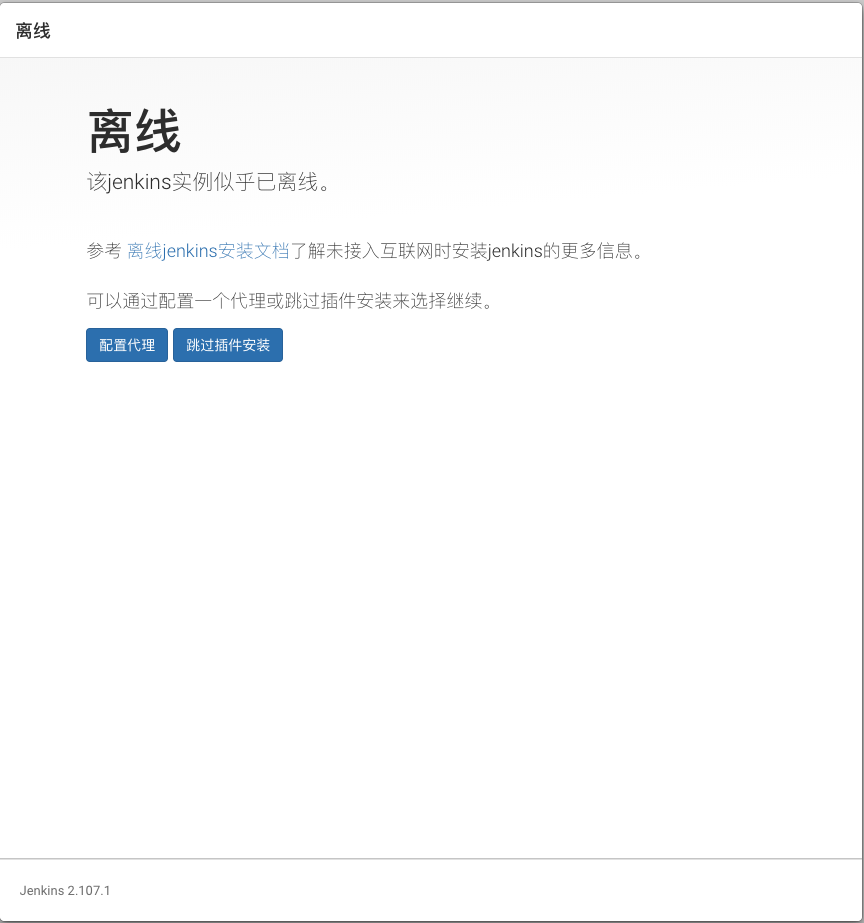
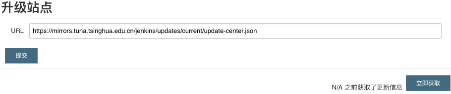

CI/CD is very important in Aigle. During that, we must have a CI sever to build, test and deploy our code. Luckily, we have a lot of such kind of software, such as, Teamcity, Jenkins, Travis CI and so on. This article will show you how to use Jenkins in docker.
1 Prerequisite
First, install docker in your machine. For detail, please refer to Docker community edition.
2 Use Jenkins in docker
Jenkins supports two ways in use: 1. the traditional way; 2. the docker way. We will use Jenkins in docker on macOS. For more details, you can refer to Installing Jenkins.
2.1 Pull Jenkins Image
docker pull jenkinsci/blueocean |
2.2 Create Jenkins Container
2.2.1 Create a volume for Jenkins
If you cant to persist the data for Jenkins, you'd better create a volume for it.
docker volume create jenkins-data |
2.3 Create Jenkins Container and Run it
docker run \ |
Note: The run command is to create a Jenkins container and run it right now.
2.4 Setup Jenkins
After the container started, now you need to do a little more setup thing. Fortunately, Jenkins has provide us a post-installation wizard. It's quite simple. For more details, you can refer to Installing Jenkins. But someone may meet the plugin installing issue during the wizard as follow.
 To solve this, we have two ways:
- change the mirror for downloading the plugin
- install the missing plugin manually.
Obviously, we don't want to install them manually. It's annoying. So we need to change the plugin update service:
- To look up the available mirror
http://mirrors.jenkins-ci.org/status.html give use all the available mirrors. In this case, I want to use https://mirrors.tuna.tsinghua.edu.cn/jenkins/updates/current/update-center.json.
- Change the plugin updates service
If your jenkins's URL is http://localhost:8080, we can visit http://localhost:8080/pluginManager/advanced to change the service url.

Figure 1: Setup update center
2.5 Stop and start Jenkins Container
Look up the container's status and name:
docker ps -a |
Stop the container
docker stop <container name> |
Start the container
docker start <container name> |